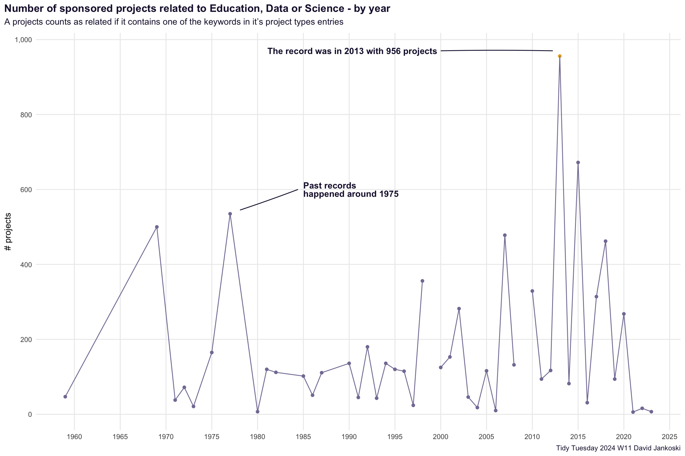

Downloading file 1 of 1: `fiscal_sponsor_directory.csv`Introduction
The context for this week’s Tidy Tuesday dataset is slightly sad and misfortunate as I saw the post from Jon Harmon (@johnthegeek) on Linked In announcing troubles with collecting sponsorships for the R4DS Learning Community 🙁.
This is a very supportive and helpful community and if you are in the position to somehow support them, then you definitely should consider it. I’ve learned a lot from their various channels on Slack, each dedicated to a specific book or topic.
This week’s Tidy Tuesday dataset is about Fiscal sponsors.
Setup libraries and load data.
Given the context - I wanted to take a look at the number of projects that are related to Education or Data Science. Each sponsorship has a project_types column which holds info on the topic of the project. I’ve decided to label a project as educational - if one of it’s project types (there are several entries possible) contains either of the keywords {Education, Data, Science} (case-insensitive).
With this I will try to answer some questions like:
- what is the share of such projects out of the whole set ?
- are more such projects sponsored over the years ?
- are the number of criteria for such projects to get sponsorship increasing over the years ?
Code
fiscal_sponsors <-
fiscal_sponsor_directory |>
select(
name,
year_fiscal_sponsor,
n_sponsored,
project_types,
eligibility_criteria,
services
) |>
mutate(
is_project_educational = str_detect(project_types, "[Ed]ucation|[Dd]ata|[Ss]cience"),
# "1987" -> "19870101" -> 1987-01-01
year = {
year_fiscal_sponsor |>
as.character() |>
str_c("0101") |>
ymd()
}
)Breakdown educational projects ?
Code
fiscal_sponsors |>
count(is_project_educational) |>
mutate(
perc = label_percent(accuracy = 0.1)(n / sum(n))
)# A tibble: 3 × 3
is_project_educational n perc
<lgl> <int> <chr>
1 FALSE 144 38.9%
2 TRUE 217 58.6%
3 NA 9 2.4% Educational projects over the years
Plot the number of such sponsored projects over the years. Hopefully we see an increasing trend.
Code
# https://github.com/katiejolly/nationalparkcolors
line_colour <- park_palette("Saguaro")[1]
annotation_colour <- park_palette("Saguaro")[6]
top_point_col <- park_palette("Everglades")[4]
# educational per year
educational_projects_sponsors |>
group_by(year) |>
summarise(n_sponsored = sum(n_sponsored)) |>
mutate(
pointcol = ifelse(year == as_date("2013-01-01"), top_point_col, line_colour)
) |>
ggplot(aes(x = year, y = n_sponsored)) +
geom_point(aes(colour = I(pointcol))) +
geom_line(aes(group = 1), colour = line_colour) +
scale_x_date(
date_breaks = "5 years",
date_labels = "%Y",
minor_breaks = NULL
) +
scale_y_continuous(
breaks = seq(0, 1000, 200),
labels = label_comma(),
minor_breaks = NULL
) +
annotate(
"text",
x = ymd(19850101),
y = 600,
label = "Past records \nhappened around 1975",
hjust = 0,
fontface = "bold",
lineheight = 0.8,
colour = annotation_colour
) +
geom_curve(
aes(x = x, y = y, xend = xend, yend = yend),
data = data.frame(
x = ymd(19840601),
xend = ymd(19780130),
y = 600,
yend = 545
),
curvature = -0.01,
colour = annotation_colour
) +
annotate(
"text",
x = ymd(20000101),
y = 970,
label = "The record was in 2013 with 956 projects",
hjust = 1.02,
fontface = "bold",
colour = annotation_colour
) +
geom_curve(
aes(x = x, y = y, xend = xend, yend = yend),
data = data.frame(
x = ymd(20000101),
xend = ymd(20120330),
y = 970,
yend = 970
),
curvature = -0.01,
colour = annotation_colour
) +
labs(
title = "Number of sponsored projects related to Education, Data or Science - by year",
subtitle = "A projects counts as related if it contains one of the keywords in it's project types entries",
caption = "Tidy Tuesday 2024 W11 David Jankoski",
x = NULL,
y = "# projects"
) +
theme_minimal() +
theme(
plot.title.position = "plot",
panel.background = element_blank(),
plot.title = element_markdown(colour = annotation_colour, face = "bold"),
plot.subtitle = element_markdown(colour = annotation_colour, margin = margin(b = 8)),
plot.caption = element_markdown(colour = annotation_colour, margin = margin(t = 6))
)
Takeaways
- there are some strange quirks in the data which i am not sure how to interpet
- there are missing values - seen by the breaks in the lines on the plot
- successive years seem to be very “jumpy”, not sure if this is realistic ?
- the general trend is that indeed such projects are increasingly more sponsored over the years
- there was a first in peak in sponsoring such projects around 1975, with more recent years 2013 reaching back to those record levels